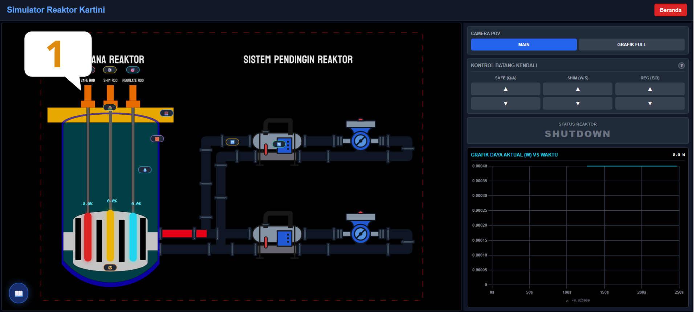
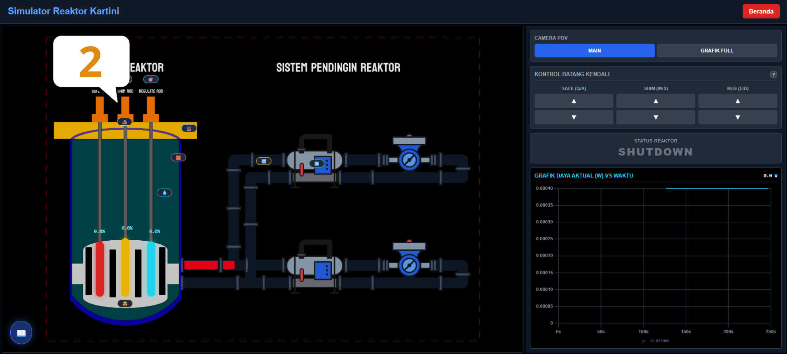
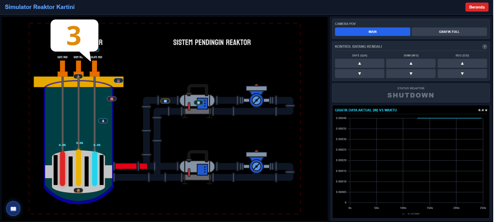
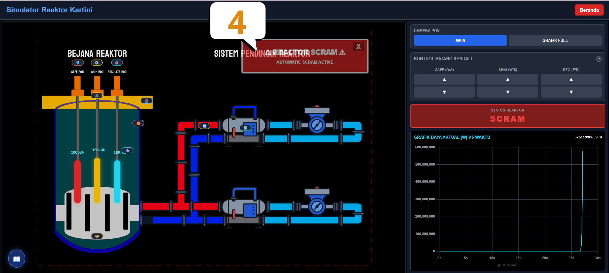
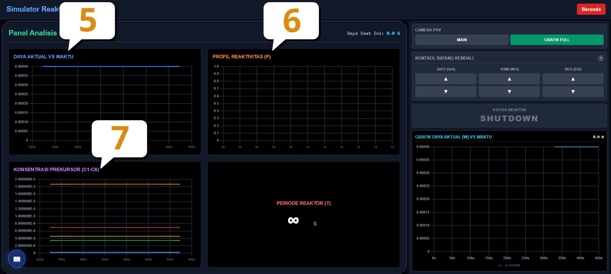

Fitur

- Safe Rod (SCRAM): Batang pengaman B₄C yang menghentikan reaktor otomatis saat daya melebihi 110 kW.
- Shim Rod (Kompensasi): Menyesuaikan reaktivitas akibat perubahan bahan bakar dan temperatur.
- Regulating Rod (Pengatur): Mengatur daya reaktor secara halus hingga daya nominal 100 kW.
- Rod Drive Mechanism: Mekanisme motor dan kopling magnetik penggerak batang kendali; memungkinkan batang jatuh saat SCRAM.
- Jembatan Reaktor (Bridge): Penyangga penggerak batang kendali, sensor, dan akses penanganan bahan bakar.
- Perisai Radiasi (Biological Shielding): Beton barit yang mengurangi paparan radiasi neutron dan gamma.
- Kolam Reaktor & Air Moderator: Kolam berisi air demineralisasi sebagai moderator, pendingin, dan perisai radiasi.
- Teras Reaktor (Core): Tempat elemen bahan bakar, grafit, batang kendali, dan sumber neutron.
- Pipa Pendingin Primer: Menyalurkan air pendingin dari kolam ke penukar panas (heat exchanger).
- Pompa Sirkulasi: Mengalirkan pendingin sekunder melalui penukar panas untuk membuang panas reaktor.
Langkah-Langkah Penggunaan





- Safe Rod merupakan batang kendali yang digunakan untuk mengendalikan kondisi keselamatan reaktor. Safe Rod harus dinaikkan terlebih dahulu hingga posisi 100% sebelum batang kendali lainnya dapat dioperasikan.
- Naik: Space + Q
- Turun: Space + A
- Shim Rod merupakan batang kendali yang digunakan untuk mengatur reaktivitas dan kondisi daya reaktor.
- Naik: Space + W
- Turun: Space + S
- Regulating Rod Batang ini berfungsi untuk mengatur reaktivitas dan daya reaktor secara lebih halus. Perubahan posisi batang kendali akan memengaruhi indikator daya dan status reaktor.
- Naik: Space + E
- Turun: Space + D
- Protokol SCRAM: Jika daya menembus 110 kW (110.000 W), alarm akan aktif. Setelah jeda mekanis selama 1,5 detik, semua batang kendali akan dijatuhkan secara otomatis hingga batas 0% untuk menghentikan reaksi fisi secara paksa.
- Daya Aktual vs Waktu: Menunjukkan perubahan daya termal reaktor dalam satuan Watt (W) terhadap waktu secara real-time.
- Profil Reaktivitas: Reaktivitas (ρ) menunjukkan kondisi reaktor, apakah daya stabil, meningkat, atau menurun. Saat ρ = 0, reaktor berada dalam keadaan seimbang dan daya tetap stabil. Jika reaktivitas meningkat melebihi Beta Efektif (β), reaktor dapat memasuki kondisi Prompt Critical, yaitu saat daya meningkat sangat cepat sehingga sistem keselamatan harus segera menghentikan reaksi untuk menjaga keamanan.
- Konsentrasi Prekursor: Kelompok isotop hasil fisi yang menghasilkan neutron tunda. Neutron tunda berfungsi sebagai “rem alami” reaktor karena membantu memperlambat perubahan daya, sehingga reaktor dapat dikendalikan dengan aman.